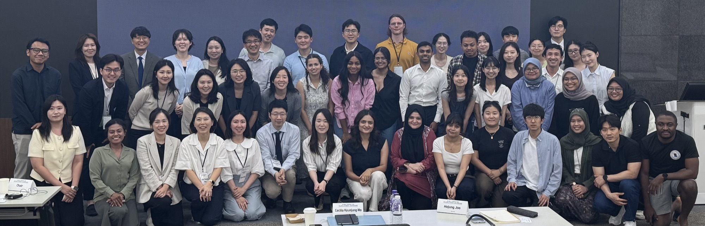

Rigorous research on political economy in a contested world
The Global Strategy & Political Economy (GSPE) Lab at the KDI School of Public Policy and Management studies how domestic and international politics shape economic policy, development, and global cooperation and competition.

Political economy, from the domestic to the global
Founded in 2024, the GSPE Lab conducts research on political economy in both international and domestic settings. Drawing on experimental and observational data and rigorous empirical methods, our work aims to inform policy debates on trade, investment, development, and governance.
Research
Rigorous empirical studies of trade, foreign investment, economic statecraft, development, and political institutions, built on experimental and observational data.
Network
The annual GSPE Lab Workshop brings together leading scholars in American politics, comparative politics, international political economy, and political methodology.
3rd GSPE Lab Workshop
KDI School of Public Policy and Management, Sejong, South Korea